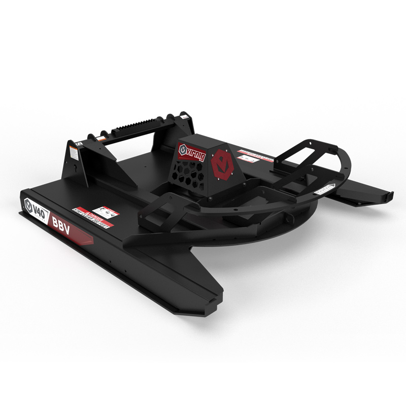
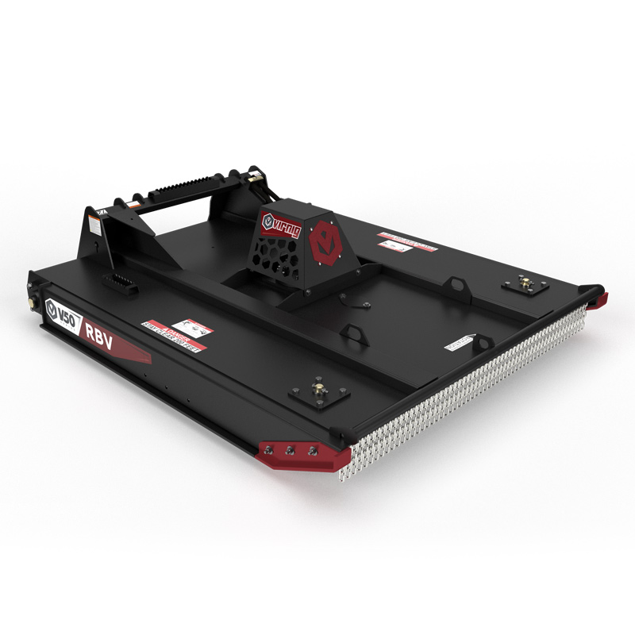
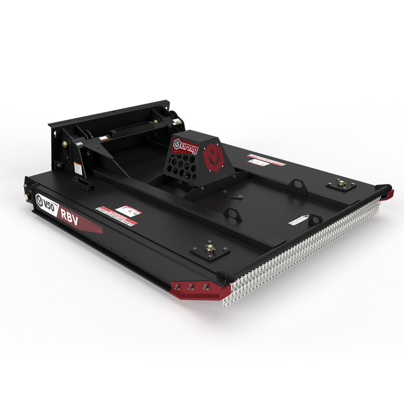
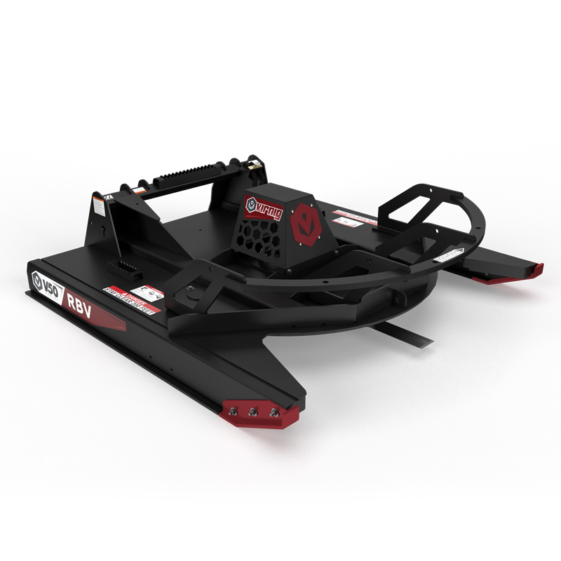
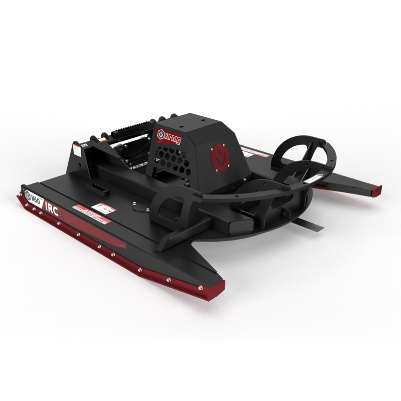
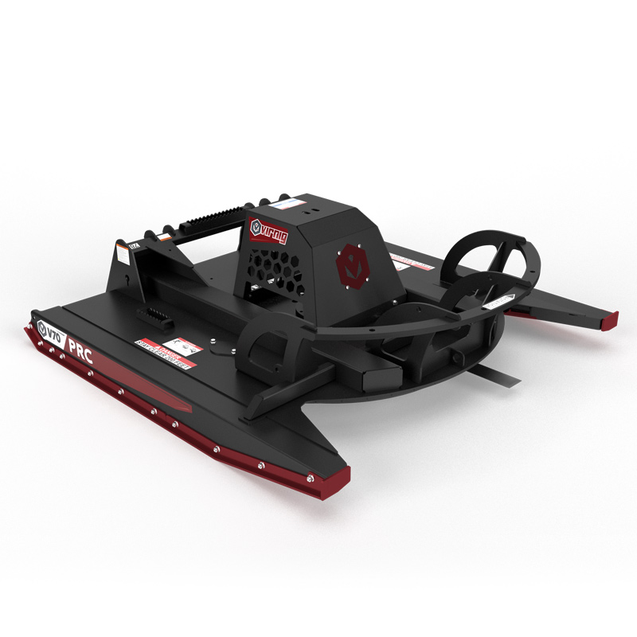

Skid steer brush cutters & slashers
Closed-front, open-front and floating-deck brush cutters. Compare seven models with tree-cutting capacities from 3 to 8 inches.
Compare the range ↓Compare Virnig skid steer brush cutters and slashers for grass, brush and tree cutting. The range includes closed-front, open-front and floating-deck models, with maximum tree-cutting capacities from 3 to 8 inches depending on the cutter.
Choose by vegetation size, ground conditions and your loader’s hydraulic setup. The comparison below separates each model’s cutting capacity and deck design so you can narrow down the right attachment.
Browse Virnig rotary brush cutters

Virnig V40 Closed Front Rotary Brush Cutter
Closed-front rotary brush cutter for grass and brush, with a maximum tree-cutting capacity of up to 3 inches.
View detail
Virnig V40 Open Front Rotary Brush Cutter
Open-front rotary brush cutter with exposed front blades and a maximum tree-cutting capacity of up to 3 inches.
View detail
Virnig V50 Closed Front Rotary Brush Cutter
Closed-front cutter with a chain curtain and replaceable front skid shoes. Maximum tree-cutting capacity: up to 4 inches.
View detail
Virnig V50 Floating Deck Rotary Brush Cutter
The floating deck follows uneven ground for a consistent cut. Maximum tree-cutting capacity: up to 4 inches.
View detail
Virnig V50 Open Front Rotary Brush Cutter
Open-front cutter with a rounded flywheel and three double-sided blades. Maximum tree-cutting capacity: up to 6 inches.
View detail
Virnig V60 Open Front Rotary Brush Cutter
Open-front cutter with four double-sided blades and replaceable AR400 front skid shoes. Maximum tree-cutting capacity: up to 8 inches.
View detail
Virnig V70 Open Front Rotary Brush Cutter
Open-front cutter with a bent-axis piston motor and relief valves. Cuts trees up to 8 inches; this model has no hydraulic braking.
View detailNo matching models
Try another model name or keyword.
Compare brush cutter capacity and deck design
Compare the maximum tree diameters and deck configurations for each model. Check the selected cutter’s full specification and motor option before matching it to a skid steer.
Swipe to compare all columns.
| Model | Maximum tree diameter | Deck configuration |
|---|---|---|
| V40 Closed Front | 3 inches | Closed front for clearing grass and brush. |
| V40 Open Front | 3 inches | Exposed front blades for cutting access. |
| V50 Closed Front | 4 inches | Closed front with a chain curtain and replaceable front skid shoes. |
| V50 Floating Deck | 4 inches | Floating deck follows the contours of uneven ground. |
| V50 Open Front | 6 inches | Open front with a rounded flywheel and three double-sided blades. |
| V60 Open Front | 8 inches | Four double-sided blades and replaceable AR400 front skid shoes. |
| V70 Open Front | 8 inches | Bent-axis piston motor with relief valves; no hydraulic braking. |
Maximum cutting diameter is one selection factor. Ground contour, motor specification, hydraulic supply and the required finish also matter.
Frequently asked questions
Which skid steer brush cutter suits uneven ground?
The V50 Floating Deck model follows the contour of the ground for a consistent cut on uneven terrain. It cuts trees up to 4 inches in diameter. Check the product specification and loader fit with DTE.
Will every Virnig cutter run on the same skid steer?
No single hydraulic requirement applies to every model and motor option in this range. Provide your loader make and model, hydraulic flow and pressure, then ask DTE to confirm the selected cutter’s motor and mounting specification.
What cab protection and stopping behaviour should I check?
A shatterproof cab is required on the loader. The V70 Open Front cutter has no hydraulic braking and its flywheel may take minutes to stop. Review the selected model’s operating requirements before use.
Guides and product information
- V50 Floating Deck: following ground contours
Review the floating-deck configuration and cutter features.
- V70 Open Front: motor and operating requirements
Check the bent-axis motor, case-drain indicator and braking information.
Find the cutter that fits your loader
Tell DTE your skid steer make and model, hydraulic flow and pressure, ground conditions and the size of vegetation you need to cut. Ask for a quote on the cutter and motor configuration that suits your machine.